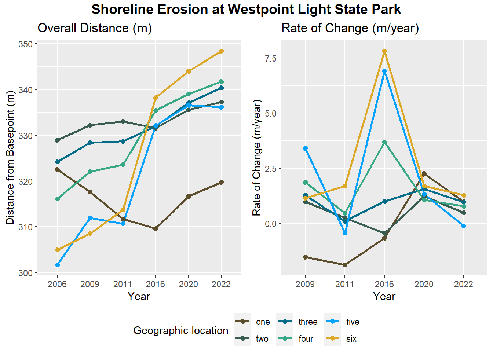

site.one <- data.frame(year = c("2006", "2009", "2011", "2016", "2020", "2022"),
distance_m = c(322.55, 317.65, 311.69, 309.64, 316.66, 319.76),
position = "one")23-08070-000_WestportGolfLinks
TODO: BADGES 


Questions
15 year R0 is one wavelength, taken from average wavelengths at all six locations, value of 63 m.
Where did the 10ft/year R0 northern migration come from? I have it written down…
Using the value of 63 m, i.e in 15 years R0 will have migrated one wavelength north, that means a rate of 4.2 m/year, meaning the R0 in 25 years will be 105m. We are assuming limited protection from the logspiral, so the the apex of the curve is attributed to the 75 year linear expansion rate.
Overview here
An arbitrary baseline was drawn approximately 350m from shoreline. Each historical shoreline from 2006 to 2022 was measured to the baseline at six separate points, titled sites 1-6 heading north to south (see more detail below). All distance information is in meters. Using the historical imagery, change rates were calculated at all locations and extrapolated. From those extrapolations, erosion projections for 15 and 25 years were mapped onto the satellite images.
Relevant images of a selection of sites
Below is a 2022 satellite image of Westport Light State Park. The white line is the arbitrary baseline, and the horizontal red lines indicate a selection of sample lines which trace the approximate distance from the baseline to the current shoreline.

The North site, pictured below and located at approximately 46°54’6.84”N, 124° 7’54.29”W, was chosen due to proximity to nourishment provided by the Army Corps of Engineers. This nourishment historically limits erosion in this area.

The inflection point, pictured below in the red polygon and located at approximately 46°53’49.91”N, 124° 7’48.71”W, was chosen by visual inspection only at the location where active erosion appears to be mitigated by Corps nourishment.

The South site, pictured below and located at approximately 46°53’13.57”N, 124° 7’34.81”W, was chosen due to proximity to dynamic revetment constructed in 2021. This site characterizes an area of complicated erosion risk due to the revetment and a heavily used beach access point.

Setup
Create data frames at each sampling position
Site One sample site measurements
Site Two sample site measurements (inflection point)
site.two <- data.frame(year = c("2006", "2009", "2011", "2016", "2020", "2022"),
distance_m = c(328.97, 332.19, 333.04, 331.54, 335.62, 337.26),
position = "two")Site Three sample site measurements
site.three <- data.frame(year = c("2006", "2009", "2011", "2016", "2020", "2022"),
distance_m = c(324.20, 328.34, 328.67, 331.95, 337.12, 340.37),
position = "three")Site Four sample site measurements
site.four <- data.frame(year = c("2006", "2009", "2011", "2016", "2020", "2022"),
distance_m = c(316.12, 322.01, 323.54, 335.46, 339.06, 341.74),
position = "four")Site Five sample site measurements
site.five <- data.frame(year = c("2006", "2009", "2011", "2016", "2020", "2022"),
distance_m = c(301.69, 311.98, 310.65, 332.11, 336.56, 336.16),
position = "five")Site Six site measurements
site.six <- data.frame(year = c("2006", "2009", "2011", "2016", "2020", "2022"),
distance_m = c(305.00, 308.49, 313.71, 338.23, 344.00, 348.42),
position = "six")Combine all locations to one data frame for calculations.
distance_to_baseline <- site.one %>%
rbind(site.two, site.three, site.four, site.five, site.six)
distance_to_baseline$year <- factor(distance_to_baseline$year,
levels = c("2006", "2009", "2011", "2016", "2020", "2022"))
distance_to_baseline$position <- factor(distance_to_baseline$position,
levels = c("one", "two", "three", "four", "five", "six"))Create plots
Plot distance by year
distance.plot <- ggplot(distance_to_baseline, aes(group=position, y=distance_m, x=year, color=position)) +
geom_line(linewidth = 1) +
geom_point(size = 2) +
scale_color_manual(values = c('#5C4E2C', '#395C51', "#036C88", "#36A886","#04A1FF", "#DBA827"),
name = "Geographic location") +
xlab("Year") +
ylab("Distance from Basepoint (m)") +
ggtitle("Overall Distance (m)")Calculate rates of change (ROC) at each location
ROC <- distance_to_baseline %>%
group_by(position) %>%
arrange(position, year) %>%
mutate(rate = 100 * (distance_m - lag(distance_m))/lag(distance_m)) %>%
drop_na()Plot rates of change by year
ROC.plot <- ggplot(data=ROC, aes(x=year, y=rate, group=position, color = position)) +
geom_line(linewidth = 1) +
geom_point(size = 2) +
scale_color_manual(values = c('#5C4E2C', '#395C51', "#036C88", "#36A886","#04A1FF", "#DBA827"),
name = "Geographic location") +
xlab("Year") +
ylab("Rate of Change (m/year)") +
ggtitle("Rate of Change (m/year)")Combine plots
all.plots <- ggarrange(distance.plot, ROC.plot, common.legend = TRUE, legend="bottom")
annotate_figure(all.plots, top = text_grob("Shoreline Erosion at Westpoint Light State Park",
color = "black", face = "bold", size = 14))
Predict 15-year and 25-year erosion rate
distance_to_baseline$year <- as.numeric(as.character(distance_to_baseline$year))
prediction <- distance_to_baseline %>%
group_by(position) %>%
mutate(time_diff = max(year) - min(year),
distance_diff = distance_m[year == 2022] - distance_m[year == 2006],
m_change_per_year = round(distance_diff / time_diff),
year_15_erosion = m_change_per_year * 15,
year_25_erosion = m_change_per_year * 25) %>%
select(position:year_25_erosion) %>%
unique()
prediction <- prediction[order(prediction$position),]
prediction# A tibble: 6 × 6
# Groups: position [6]
position time_diff distance_diff m_change_per_year year_15_erosion
<fct> <dbl> <dbl> <dbl> <dbl>
1 one 16 -2.79 0 0
2 two 16 8.29 1 15
3 three 16 16.2 1 15
4 four 16 25.6 2 30
5 five 16 34.5 2 30
6 six 16 43.4 3 45
# ℹ 1 more variable: year_25_erosion <dbl>The image below shows Westport Light State Park with the predicted 15- and 25-year erosion lines extrapolated from the calculated rates of change, along with a polygon citing the highest area of erosion risk from the shoreline armoring located in front of the Westport Condominiums.

Table of approximate wavelengths
wavelength <- data.frame(site = seq(1:6),
wavelength = c(58.7, 56.8, 61.5, 85, 57.9, 57.7))
avg.wavelength <- mean(wavelength$wavelength)